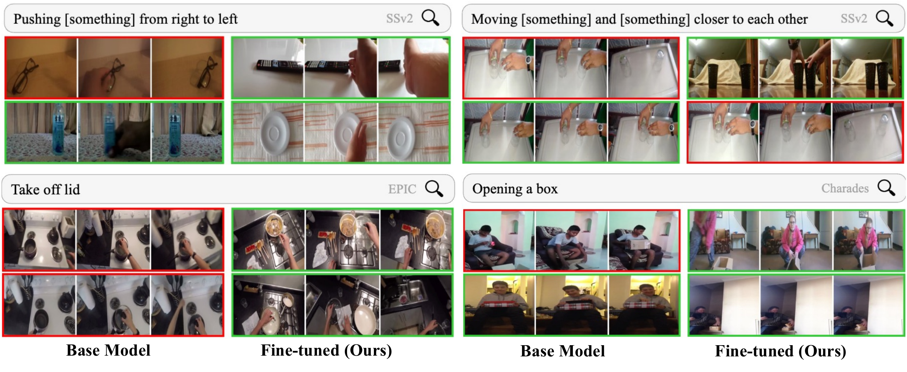
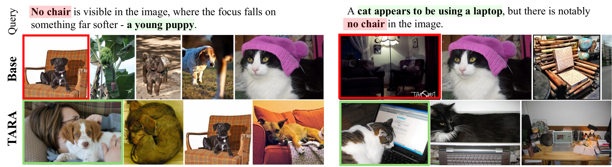
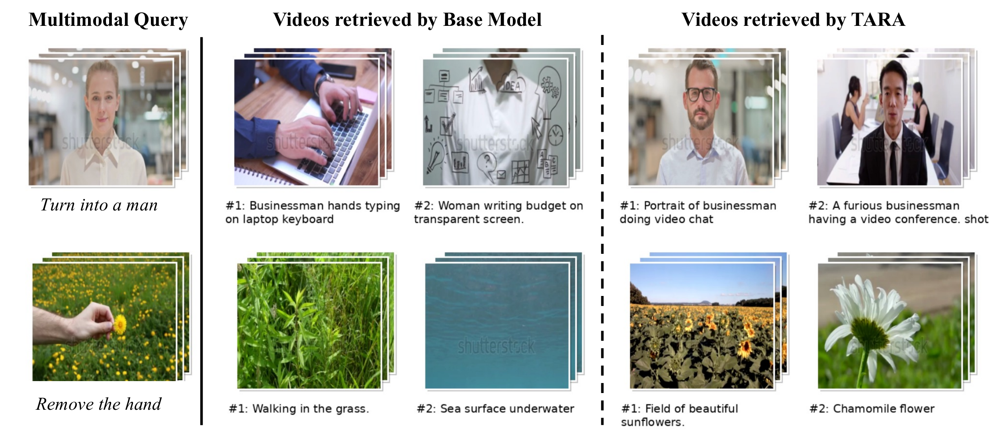
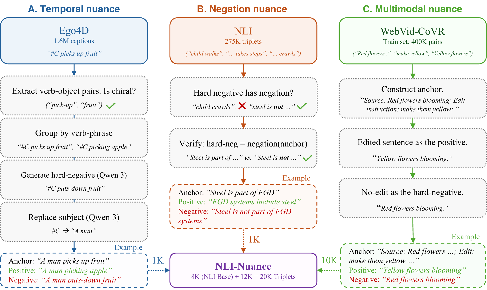
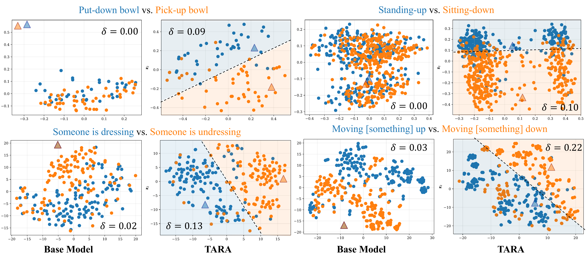
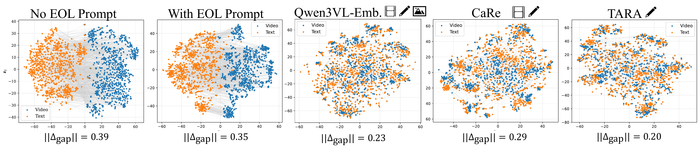
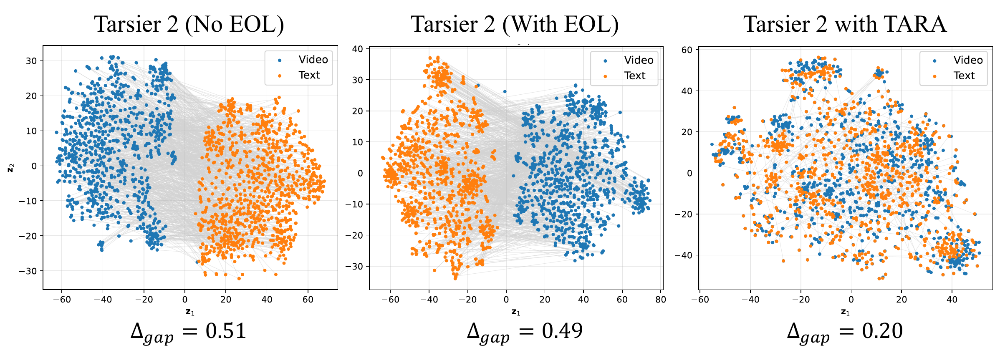
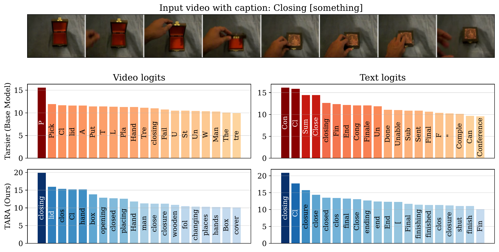

Our objective is to build an embedding model that captures the nuanced relationship between a search query and candidate videos. We cover three aspects of nuanced retrieval: (i) temporal, (ii) negation, and (iii) multimodal. For temporal nuance, we consider chiral actions that need distinguishing between temporally opposite actions like "opening a door" vs. "closing a door". For negation, we consider queries with negators such as "not", "none" that allow users to specify what they do not want. For multimodal nuance, we consider the task of composed retrieval where the query comprises a video along with a text edit instruction. To that end, we repurpose a Multimodal Large Language Model (MLLM) trained to generate text into an embedding model. We fine-tune it with a contrastive loss on text alone with carefully sampled hard negatives that instill the desired nuances in the learned embedding space. Despite the text-only training, our method achieves state of the art performance on all benchmarks for nuanced video retrieval. We also show that text-only training reduces the modality gap between text and video embeddings, leading to better organization of the embedding space.
What is Nuanced Video Retrieval?
Standard video retrieval models struggle with queries that require fine-grained semantic understanding. We study three distinct dimensions of nuance that everyday retrieval systems fail to handle correctly.
Chiral Actions
Many actions are chiral — they have a temporal mirror that looks identical frame-by-frame but describes the opposite event. "Opening a door" and "closing a door" share the same visual content played in reverse. A retrieval model must understand the direction of time to distinguish them. We evaluate this on the CiA-Retrieval and RTime benchmarks.

Negated Queries
Users often want to exclude certain attributes: "a dog not on grass", "someone running without a ball". CLIP-style models are notoriously insensitive to negation — they tend to retrieve results that match the positive noun phrase and ignore the negator entirely. We evaluate on NegBench (image and video) and the Adverb Recognition benchmark.

Composed Retrieval
Sometimes the query itself is multimodal: a reference video combined with a text edit instruction (e.g., "same scene but with snow instead of rain"). The model must fuse both modalities to retrieve the correctly modified target. We evaluate on the WebVid-CoVR benchmark.

Abstract
Method: The TARA Recipe
TARA (Text Adapted Retrieval Alignment) repurposes a Multimodal LLM as a joint video-text embedding model. We extract embeddings via an "Explicit One-word Limitation" (EOL) prompt — e.g., "<video>: Summarize the video in one word:" — and use the final hidden state as the embedding. We then fine-tune with a contrastive loss on text triplets with carefully engineered hard negatives. This text-only training reduces the modality gap between video and text embeddings, which explains its surprising effectiveness.
Extract chiral verb-object pairs from Ego4D. Generate temporally antonymous sentences (e.g., "closes the box" → "opens the box") using an LLM as hard negatives.
Filter NLI triplets where the hard-negative uses explicit negation operators (not, never, none…), training the model to precisely understand what is absent.
Translate Composed Video Retrieval to a text task: anchor = source caption + edit instruction, positive = edited caption, negative = original (unedited) caption.

Temporal Nuance
Results: Temporal Nuance
Key Takeaway: TARA achieves state-of-the-art on the CiA-Retrieval benchmark across all three datasets and all difficulty settings (Chiral, Static, All), while being fine-tuned on text alone.
CiA-Retrieval (mAP ↑)
Chiral: gallery has correct + temporal-opposite action. Static: gallery has correct + temporally irrelevant actions. All: full gallery. Higher is better.
| Method | Data (K) | SSv2 | EPIC | Charades | ||||||
|---|---|---|---|---|---|---|---|---|---|---|
| Chiral | Static | All | Chiral | Static | All | Chiral | Static | All | ||
| CLIP (avg.) | — | 52.0 | 18.3 | 12.7 | 51.0 | 12.0 | 7.0 | 48.4 | 13.2 | 6.5 |
| InternVideo 2 | — | 52.5 | 35.7 | 20.6 | 48.3 | 22.1 | 8.8 | 50.7 | 11.9 | 11.9 |
| VLM2Vec-V2 (multimodal) | 1700 | 58.8 | 27.8 | 15.9 | 49.4 | 25.4 | 12.9 | 53.5 | 18.8 | 10.5 |
| CaRe | 275 | 66.4 | 46.2 | 23.7 | 62.3 | 25.0 | 16.9 | 56.1 | 25.2 | 12.9 |
| ArrowRL | 25 | 67.5 | 33.8 | 22.5 | 55.7 | 12.4 | 9.6 | 57.1 | 18.6 | 12.2 |
| Qwen3VL-Emb. | NA | 72.0 | 43.4 | 31.8 | 62.1 | 28.6 | 20.6 | 65.3 | 37.3 | 26.1 |
| Tarsier 2 (base) | — | 77.7 | 26.9 | 24.0 | 67.4 | 22.0 | 15.3 | 60.5 | 13.4 | 9.2 |
| Tarsier 2 + TARA (Ours) | 20 | 88.9 | 66.7 | 58.6 | 81.1 | 45.6 | 38.9 | 71.4 | 38.6 | 29.0 |

Reversed in Time (RTime) — R@1 ↑
Arrow-of-time benchmark: given a video, choose the correct vs. time-reversed caption (T2V) and vice versa (V2T).
| Method | T2V | V2T |
|---|---|---|
| Singularity (zero-shot) | 48.7 | 49.9 |
| InternVideo2-1B (zero-shot) | 50.0 | 51.0 |
| Qwen2.5VL (zero-shot) | 53.4 | 66.6 |
| Tarsier 2 (zero-shot) | 58.8 | 59.5 |
| — fine-tuned on RTime — | ||
| CLIP4Clip | 49.8 | 49.8 |
| UMT-Neg | 54.5 | 54.2 |
| ArrowRL-Qwen2.5 | 55.6 | 69.6 |
| Tarsier 2 + TARA (Ours) | 67.2 | 77.9 |
Negation Nuance
Results: Negation Nuance
Key Takeaway: TARA (zero-shot) dramatically outperforms all CLIP- and NegCLIP-based models fine-tuned on negation-augmented caption data, on both image (COCO) and video (MSR-VTT) retrieval.
NegBench — R@5 ↑
Std.: standard queries. Neg.: negation queries (e.g., "a dog but not on grass"). Higher is better.
| Method | Fine-tuning data | COCO | MSR-VTT | ||
|---|---|---|---|---|---|
| Std. | Neg. | Std. | Neg. | ||
| CLIP (none) | None | 54.8 | 48.0 | 50.6 | 45.8 |
| CLIP (CC) | CC (img+txt) | 58.8 | 54.5 | 53.7 | 49.9 |
| NegCLIP (none) | None | 68.7 | 64.4 | 53.7 | 51.0 |
| NegCLIP (CC-NegCap) | CC-NegCap | 68.6 | 67.5 | 56.5 | 54.6 |
| Tarsier 2 (base) | None | 33.3 | 21.5 | 25.6 | 18.9 |
| Tarsier 2 + TARA (Ours) | NLI-Nuance (text only) | 76.7 | 73.6 | 65.1 | 65.0 |
Adverb Recognition — Accuracy ↑
Given a video and an action verb, select the correct adverb between two choices (e.g., "slowly" vs. "quickly").
| Method | VATEX | MSRVTT |
|---|---|---|
| Chance | 50.0 | 50.0 |
| Action Modifiers (semi-sup.) | 64.2 | — |
| AM + Pseudo-labels | 67.5 | 70.5 |
| Tarsier 2 (base) | 57.4 | 56.6 |
| Tarsier 2 + TARA (Ours) | 74.8 | 76.8 |
Multimodal Nuance
Results: Multimodal Nuance
Key Takeaway: TARA handles queries composed of a video + a text edit instruction (Composed Video Retrieval). It outperforms even methods fine-tuned directly on the WebVid-CoVR dataset, using only text during training.
WebVid-CoVR ↑
Query = source video + text edit instruction. Goal: retrieve the edited video. Evaluated on 2,556 query-video pairs.
| Method | R@1 | R@5 | R@10 |
|---|---|---|---|
| Zero-shot | |||
| BLIP (V+T) | 45.5 | 70.5 | 79.5 |
| CLIP (V+T) | 44.4 | 69.1 | 77.6 |
| Tarsier 2 + TARA (Ours) | 66.3 | 86.7 | 91.5 |
| Fine-tuned on CoVR data | |||
| CLIP (V+T) | 50.6 | 77.1 | 85.1 |
| Ventura et al. | 53.1 | 79.9 | 86.9 |
| Ventura et al. (v2) | 59.8 | 83.8 | 91.3 |
Results: Standard Benchmarks (MMEB-V2)
Key Takeaway: Text-only fine-tuning does not hurt standard video understanding. TARA comprehensively improves upon Tarsier 2 and is competitive with models trained on orders of magnitude more multimodal data.
Video classification and retrieval tasks from MMEB-V2. TARA ⊕ Q3VLE = ensemble of TARA and Qwen3VL-Embedding.
| Method | Video Classification | Video Retrieval | ||||||||
|---|---|---|---|---|---|---|---|---|---|---|
| UCF | HMDB | K700 | BF | SSv2 | MSR | MSVD | DDMo | YC2 | VTX | |
| VLM2Vec-V2 (multimodal) | 60.0 | 40.9 | 38.0 | 14.8 | 42.8 | 28.3 | 48.1 | 30.4 | 10.6 | 26.5 |
| LamRA-Qwen2 | 60.4 | 40.5 | 42.3 | 16.9 | 36.3 | 22.1 | 46.1 | 24.8 | 9.2 | 19.1 |
| TTE-7B | 78.6 | 63.9 | 55.6 | 34.2 | 55.3 | 39.5 | 59.4 | 36.3 | 20.3 | 32.6 |
| Tarsier 2 (base) | 37.9 | 17.4 | 29.6 | 36.1 | 15.9 | 9.5 | 39.8 | 12.2 | 3.9 | 16.6 |
| Tarsier 2 + TARA (Ours) | 80.3 | 69.0 | 59.4 | 45.6 | 76.4 | 40.7 | 82.2 | 36.8 | 16.7 | 53.2 |
| Qwen3VL-Embedding | 94.6 | 77.5 | 71.2 | 67.2 | 76.9 | 53.8 | 87.2 | 56.1 | 32.8 | 64.8 |
| TARA ⊕ Qwen3VL-Emb. (Ensemble) | 94.3 | 78.3 | 70.0 | 68.6 | 81.4 | 54.5 | 88.4 | 56.1 | 32.1 | 66.2 |
Analysis: Why Does Text-Only Training Work?
We study the modality gap — the systematic offset between video and text embeddings in the shared embedding space. Despite sharing an LLM backbone, MLLMs exhibit a clear modality gap because video and text tokens arrive through different pathways (vision encoder + MLP projection vs. learned text embeddings). This gap wastes representational capacity and skews cosine similarities, hurting retrieval.



EOL prompt alone is insufficient
While Jiang et al. showed EOL prompts dissolve the modality gap for images with LLaVA-NeXT, we find this does not generalize to video-text pairs for Qwen2VL, InternVL3, Tarsier, and Qwen3VL. The gap persists at ‖Δgap‖ ≈ 0.35–0.68.
Text-only TARA closes the gap
TARA reduces ‖Δgap‖ from 0.49 → 0.20 for Tarsier 2 via the uniformity pressure of contrastive training: text embeddings spread on the hypersphere, pulling both modality centroids toward the origin and closer to each other.
Modality Gap Measurements (‖Δgap‖ ↓, lower is better)
| Model | No EOL | With EOL | After TARA |
|---|---|---|---|
| Qwen2VL-7B | 0.39 | 0.35 | 0.20 |
| Tarsier 2 | 0.49 | 0.51 | 0.20 |
| InternVL3-8B | 0.43 | 0.68 | — |
| Qwen3VL-8B | 0.56 | 0.62 | — |
BibTeX
@article{bagad2026tara,
title = {Adapting MLLMs for Nuanced Video Retrieval},
author = {Bagad, Piyush and Zisserman, Andrew},
journal = {arXiv preprint arXiv:2512.13511},
year = {2026}
}